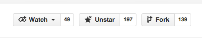

Try the development version¶
Note
git is the name of a source code management system. It is used to keep track of changes made to code and to manage contributions coming from several different people. If you want to read more about git right now take a look at Git Basics.
If you have never used git before, allow one hour the first time you do this. You will not need to do this every time you want to contribute; most of it is one-time setup. You can count on one hand the number of git commands you will need to regularly use to keep your local copy of Astropy up to date. If you find this taking more than an hour email the astropy developers list for help
Trying out the development version of Astropy is useful in three ways:
- More users testing new features helps uncover bugs before the feature is released.
- A bug in the most recent stable release might have been fixed in the development version. Knowing whether that is the case can make your bug reports more useful.
- You will need to go through all of these steps before contributing any code to Astropy. Practicing now will save you time later if you plan to contribute.
Overview¶
Conceptually, there are several steps to getting a working copy of the latest version of Astropy on your computer:
- Make your own copy of Astropy on GitHub; this copy is called a fork (if you don’t have an account on github yet, go there now and make one).
- Make sure git is installed and configured on your computer
- Copy your fork of Astropy from GitHub to your computer; this is called making a clone of the repository.
- Tell git where to look for changes in the development version of Astropy
- Create your own private workspace; this is called making a branch.
- “Activate” the development version of astropy
- Test your development copy
- Try out the development version
- “Deactivate” the development version
Step-by-step instructions¶
Make your own copy of Astropy on GitHub¶
In the language of GitHub, making a copy of someone’s code is called making a fork. A fork is a complete copy of the code and all of its revision history.
Log into your GitHub account.
Go to the Astropy GitHub home page.
Click on the fork button:
After a short pause and an animation of Octocat scanning a book on a flatbed scanner, you should find yourself at the home page for your own forked copy of Astropy.
Make sure git is installed and configured on your computer¶
Check that git is installed:
Check by typing, in a terminal:
$ git --version
# if git is installed, will get something like: git version 1.8.4
If git is not installed, get it.
Basic git configuration:
Follow the instructions at Set Up Git at GitHub to take care of two essential items:
- Set your user name and email in your copy of git
- Set up authentication so you don’t have to type your github password every time you need to access github from the command line. The default method at Set Up Git at GitHub may require administrative privileges; if that is a problem, set up authentication using SSH keys instead
We also recommend setting up git so that when you copy changes from your computer to GitHub only the copy (called a branch) of Astropy that you are working on gets pushed up to GitHub. If your version of git is 1.7.11 or, greater, you can do that with:
git config --global push.default simple
If you skip this step now it is not a problem; git will remind you to do it in those cases when it is relevant. If your version of git is less than 1.7.11, you can still continue without this, but it may lead to confusion later, as you might push up branches you do not intend to push.
Note
Make sure you make a note of which authentication method you set up because it affects the command you use to copy your GitHub fork to your computer.
If you set up password caching (the default method) the URLs will look like
https://github.com/your-user-name/astropy.git.
If you set up SSH keys the URLs you use for making copies will look
something like git@github.com:your-user-name/astropy.git.
Copy your fork of Astropy from GitHub to your computer¶
One of the commands below will make a complete copy of your GitHub fork
of Astropy in a directory called astropy; which form you use depends
on what kind of authentication you set up in the previous step:
# Use this form if you setup SSH keys...
$ git clone git@github.com:your-user-name/astropy.git
# ...otherwise use this form:
$ git clone https://github.com/your-user-name/astropy.git
If there is an error at this stage it is probably an error in setting up authentication.
Tell git where to look for changes in the development version of Astropy¶
Right now your local copy of Astropy doesn’t know where the development version of Astropy is. There is no easy way to keep your local copy up to date. In git the name for another location of the same repository is a remote. The repository that contains the latest “official” development version is traditionally called the upstream remote, but here we use a more meaningful name for the remote: astropy.
Change into the astropy directory you created in the previous step and
let git know about about the astropy remote:
cd astropy
git remote add astropy git://github.com/astropy/astropy.git
You can check that everything is set up properly so far by asking git to
show you all of the remotes it knows about for your local repository of
Astropy with git remote -v, which should display something like:
astropy git://github.com/astropy/astropy.git (fetch)
astropy git://github.com/astropy/astropy.git (push)
origin git@github.com:your-user-name/astropy.git (fetch)
origin git@github.com:your-user-name/astropy.git (push)
Note that git already knew about one remote, called origin; that is your fork of Astropy on GitHub.
To make more explicit that origin is really your fork of Astropy, rename that remote to your GitHub user name:
git remote rename origin your-user-name
Create your own private workspace¶
One of the nice things about git is that it is easy to make what is essentially your own private workspace to try out coding ideas. git calls these workspaces branches.
Your repository already has several branches; see them if you want by running
git branch -a. Most of them are on remotes/origin; in other words,
they exist on your remote copy of Astropy on GitHub.
There is one special branch, called master. Right now it is the one you are
working on; you can tell because it has a marker next to it in your list of
branches: * master.
To make a long story short, you never want to work on master. Always work on a branch.
To avoid potential confusion down the road, make your own branch now; this one you can call anything you like (when making contributions you should use a meaningful more name):
git branch my-own-astropy
You are not quite done yet. Git knows about this new branch; run
git branch and you get:
* master
my-own-astropy
The * indicates you are still working on master. To work on your branch
instead you need to check out the branch my-own-astropy. Do that with:
git checkout my-own-astropy
and you should be rewarded with:
Switched to branch 'my-own-astropy'
“Activate” the development version of astropy¶
Right now you have the development version of Astropy, but python will not see it. Though there are more sophisticated ways of managing multiple versions of Astropy, for now this straightforward way will work (if you want to jump ahead to the more sophisticated method look at Python virtual environments).
Note
There are a couple of circumstances in which this quick method of activating your copy of Astropy will NOT work and you need to go straight to using a virtual python environment:
- You use Python 3.
- You want to work on C or Cython code in Astropy.
In the directory where your copy of Astropy is type:
python setup.py develop
Several pages of output will follow the first time you do this; this wouldn’t
be a bad time to get a fresh cup of coffee. At the end of it you should see
something like Finished processing dependencies for astropy==0.3.dev6272.
To make sure it has been activated change to a different directory outside of the astropy distribution and try this in python:
>>> import astropy
>>> astropy.__version__
'0.3.dev6272'
The actual version number will be different than in this example, but it should have dev in the name.
Warning
Right now every time you run Python, the development version of astropy will be used. That is fine for testing but you should make sure you change back to the stable version unless you are developing astropy. If you want to develop astropy, there is a better way of separating the development version from the version you do science with. That method, using a virtualenv, is discussed at Python virtual environments.
For now remember to change back to your usual version when you are done with this.
Test your development copy¶
Testing is an important part of making sure Astropy produces reliable, reproducible results. Before you try out a new feature or think you have found a bug make sure the tests run properly on your system.
If the test don’t complete successfully, that is itself a bug–please report it.
To run the tests, navigate back to the directory your copy of astropy is in on your computer, then, at the shell prompt, type:
python setup.py test
This is another good time to get some coffee or tea. The number of test is large. When the test are done running you will see a message something like this:
4741 passed, 85 skipped, 11 xfailed
Skips and xfails are fine, but if there are errors or failures please report them.
Try out the development version¶
If you are going through this to ramp up to making more contributions to Astropy you don’t actually have to do anything here.
If you are doing this because you have found a bug and are checking that it still exists in the development version, try running your code.
Or, just for fun, try out one of the new features in the development version.
Either way, once you are done, make sure you do the next step.
“Deactivate” the development version¶
Be sure to turn the development version off before you go back to doing science work with Astropy.
Navigate to the directory where your local copy of the development version is, then run:
python setup.py develop -u
You should really confirm it is deactivated by changing to a different directory outside of the astropy distribution and running this in python:
>>> import astropy
>>> astropy.__version__
'0.2.5'
The actual version number you see will likely be different than this example,
but it should not have 'dev' in it.